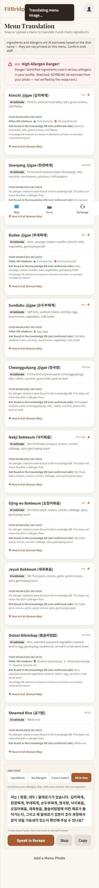
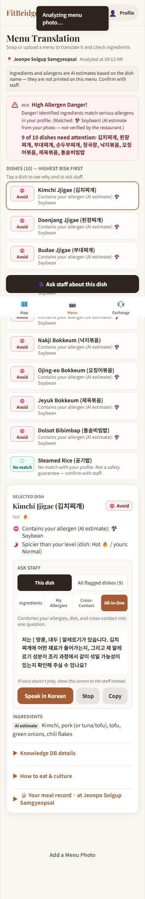
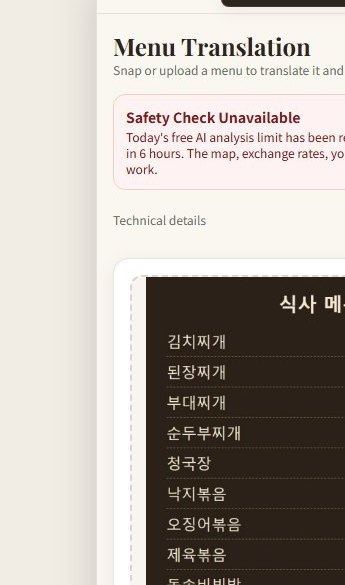
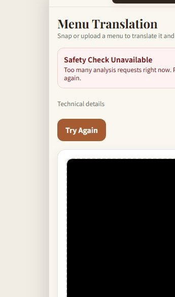

Case 01 · 사용자 중심 설계 복잡한 기능을 연결하다 문제어떤 음식이 위험한지 한눈에 보이지 않았고, 직원 질문은 화면 맨 아래에 있었습니다. 지도 · 메뉴 · 환율 · 리뷰도 따로 움직였습니다. 내가 바꾼 것‘내가 고른 음식 하나’를 중심에 두고 위험 정보, 가격, 직원 질문, 리뷰가 함께 바뀌도록 화면을 다시 짰습니다. BEFORE  123 1경고는 배너 하나뿐 2카드마다 긴 설명이 반복 3직원 질문은 맨 아래 (3,013px) AFTER  1234 1“10개 중 9개 주의” 요약 2음식별 위험도 표시 3직원 질문 바로가기 4선택 음식 중심 상세 정보 결과 화면 길이−31.3% 메뉴 분석까지 클릭10 → 8회 직원 질문 접근스크롤 → 1회 터치 음식별 위험도 표시0 → 10/10 메뉴판 가격 자동 환산환율 탭과 연결 BEFORE3,481px AFTER2,393px 두 화면은 같은 AI 응답(메뉴판 1장 → 음식 10개)을 390px 화면에서 재생한 것입니다. 휴대폰 안을 스크롤하거나 번호를 누르면 해당 위치로 이동합니다. React · Zustand로 고른 음식 하나를 여러 화면이 함께 보게 했고, Playwright로 클릭과 스크롤을 측정했습니다.
Case 02 · 데이터 신뢰성 AI의 불확실성을 관리하다 문제AI가 정보를 빠뜨려도 정상 데이터처럼 처리될 수 있었고, AI 추정을 보완할 식품 데이터가 없었습니다. 내가 바꾼 것빠진 정보는 ‘알 수 없음’으로 따로 표시하고, 식품 · 알레르기 자료를 Excel DB로 정리해 Python으로 검증한 뒤 서비스에 연결했습니다. Excel DB알레르겐 · 식재료 · 근거 문헌11개 시트 Python 검증규칙 검사 · 변환테스트 31/31 JSON검증 통과 데이터만표준 알레르겐 21종 웹 화면AI 추정과 문헌 근거를 나눠 표시위험 상태 3 → 5종 위험 판단 위험 확인 필요 일치 없음 불확실 오류 AI 추정과 문헌 근거를 구분해 보여 주는 기능이며, 실제 음식의 섭취 안전성을 검증한 것은 아닙니다. 김치찌개국산 묵은지와 돼지고기가 들어간 칼칼한 김치찌개 된장찌개국산 묵은지와 돼지고기가 들어간 칼칼한 김치찌개 오징어볶음국산 묵은지와 돼지고기가 들어간 칼칼한 김치찌개 … 9개 메뉴 모두 같은 문구 → AI 결과된장찌개된장 · 두부 · 애호박오징어볶음오징어 · 고추장 · 고춧가루 · 마늘설명문을 재료로 옮기지 않음 · AI 추정 표시 보조 사례 · 원본 데이터의 품질 문제한마음식당 메뉴판을 다시 그린 도식입니다. 같은 설명이 반복 인쇄돼 있었지만 AI는 그 문구를 재료로 옮기지 않았습니다. 들깨를 참깨로 분류부정확 · 개선 예정 성게를 조개류로 분류부정확 · 개선 예정 낙지를 오징어로 분류부정확 · 개선 예정
Case 03 · 시스템 효율화 불필요한 반복을 제거하다 문제언어만 바꿔도 같은 사진을 다시 분석했고, 실제 검증 중에 AI 사용 한도 초과 오류가 났습니다. 내가 바꾼 것사진 분석과 번역을 나누고 한 번 얻은 결과를 저장해 재사용했습니다. 하루 한도를 넘으면 쓸데없는 재시도를 멈추게 했습니다. BEFORE · 언어를 바꾸면 언어 변경→사진 분석 + 번역 다시→약 15초 대기 바꿀 때마다 같은 사진을 처음부터 다시 분석했습니다. AFTER · 언어를 바꾸면 언어 변경→저장된 결과 재사용→번역만 1회 같은 사진은 서버 캐시가 2.1초에 응답하고, AI를 다시 부르지 않습니다. 언어 변경 시 사진 재분석0회 같은 사진 캐시 응답2.1초 캐시 적중 시 AI 추가 호출0회 오류 대응 브라우저 테스트20/20 하루 한도 · 남은 시간 안내 잠깐 몰린 요청 · 다시 시도 기술 상세 보기 오류 원인은 기능 추가로 인한 과부하가 아니라 무료 등급의 하루 요청 한도였습니다. 캐시 사진 내용의 SHA-256 값을 열쇠로 결과 저장(서버 메모리, 30분, 최대 200개) 한도 처리 429 오류 내용으로 하루 · 분당 · 토큰 한도를 구분하고 Retry-After로 다시 시도할 시간을 계산. 하루 한도 이후 서버가 AI를 호출하지 않음(Mock 테스트로 확인)